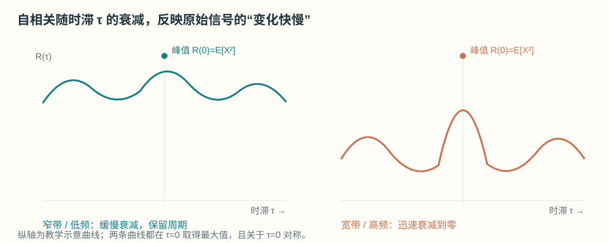
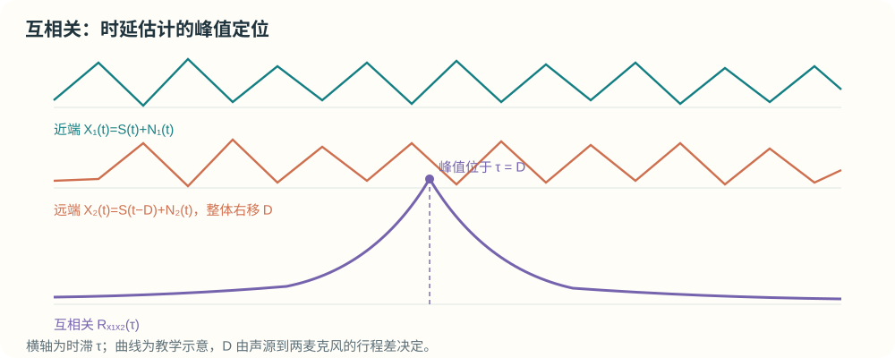
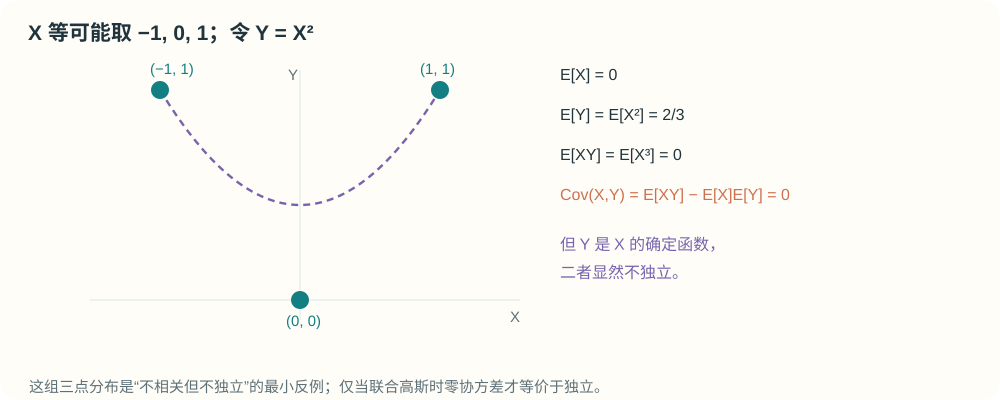

CHAPTER 07 · 随机过程与谱
随机信号的相关与均方微积分
为什么“相似度”可以用一个二阶函数刻画，而它又丢失了相位？相邻两路观测的时延从哪里读出？当我们想对随机信号求导、积分时，需要什么条件才不会陷入“样本路径处处不可导”的陷阱？
- 写出自相关、互相关的定义并正确使用柯西-施瓦茨上界
- 精确区分独立、不相关与正交，并说明联合高斯为何特殊
- 用自相关函数的连续性、可微性判断均方连续与均方可导
把波形平移一点点，它还“像”原来的自己吗？
取一段随机相位正弦的录音 X(t)=A·cos(2πft+Θ)，其中幅度 A 与频率 f 是固定常数，而相位 Θ 服从 [0,2π) 上的均匀分布，每次实验抽取一次后在整个观测期内保持不变。现在把这条波形平移 τ 秒，问：平移后的波形与原波形在统计上有多接近？这正是自相关函数要回答的问题。
对实值、二阶矩存在的过程，自相关定义为两个时刻取值的乘积期望；它是对称的，并且同时编码了“信号有多强”和“信号变化得多慢”两件事。
上界由柯西-施瓦茨不等式给出。对 μX(t)=E[X(t)]，正确的界是 √(RX(t₁,t₁)·RX(t₂,t₂))，也就是 √(E[X(t₁)²]·E[X(t₂)²])。
对上例直接积分即可得到只依赖时差 τ=t₁−t₂ 的结果：

单位与“功率”措辞：RX(0)=E[X²(t)] 严格说是信号的均方值。只有在约定 1 Ω 归一化负载、且把电压(或电流)平方视为功率时，才把它称作“平均功率”。物理量纲不同时不能直接当功率使用。
自相关函数必须满足哪些硬性约束？
对任意实值、二阶矩存在的过程，自相关函数不是一个可以随意画的曲线，它受到下面几条约束。注意每一条都是对两个时刻的函数讲的，与“平稳”无关——平稳将在下一章引入。
- 均方值非负：RX(t,t)=E[X²(t)]≥0，它是该时刻均方值的直接度量。
- 对称性：RX(t₁,t₂)=RX(t₂,t₁)，因为乘积可交换。
- 柯西-施瓦茨上界：|RX(t₁,t₂)| ≤ √(RX(t₁,t₁)·RX(t₂,t₂))。
- 非负定性：对任意有限时刻与任意实数系数，ΣiΣj cicjRX(ti,tj)≥0。这是“任意线性组合的均方非负”的直接推论，不可省略。
特别要纠正一个常见误写：不能把上界写成 σX(t₁)σX(t₂)+μX(t₁)μX(t₂)。一般情况下 √(E[X²]E[Y²]) ≠ σXσY+μXμY——当两个均值都非零时，后者会给出错误的上界。除均值和方差外，还有一条恒等式把二者联系起来：
为了避免把上界混淆，下面用两个例子把数值算到底。
正确上界 √(E[X²]E[Y²]) 恒为 6；下面比较误写公式 √(σX²σY²)+μ² 的取值。
正确上界：；误写公式：
例 A（均值为零）：X(t)=A cos(2πft+Θ)，μX=0，则 CX=RX，上界为 (A²/2)cos(2πfτ)。例 B（均值为 2）：从神经信号中取一段，X(t)=2+W(t)，其中 W(t) 零均值且 E[W(t₁)W(t₂)]=4。则 RX=E[(2+W(t₁))(2+W(t₂))]=4+4=8，而 CX=4。此时若把 RX 当成 CX（也就是方差），会把直流分量 4 错算成随机波动。
对“平稳”信号（下一章正式定义），自相关退化为单变量函数 RX(τ)，上述性质变为：RX(0)=E[X²]、RX(−τ)=RX(τ)（偶函数）、|RX(τ)|≤RX(0)。
两路信号间的延迟，从哪里读出来？
自相关衡量同一个过程在不同时刻的关联；互相关衡量两个不同过程之间的关联。它一般不对称，但满足互换下标后的互对称性。
考虑两个麦克风接收同一个声源：近端得到 X₁(t)=S(t)+N₁(t)，远端得到 X₂(t)=S(t−D)+N₂(t)，其中 D 是由行程差决定的时延。假设 S、N₁、N₂ 两两不相关且都零均值，把 X₂ 平移 τ 后与 X₁ 相乘取期望：
由于 RS 在零时差处取峰值，RX₁X₂ 就在 τ=D 处达到峰值——这就是时延估计（TDOA）和雷达匹配滤波的共同原理。

假设一旦破坏就失效：若两个麦克风受到共同干扰（N₁ 与 N₂ 相关），它们的噪声也会在互相关上贡献一个可能在 τ=0 附近的峰，把真实时延峰值偏移。工程上常用广义互相关—相位变换（GCC-PHAT）等方法先白化再取峰，但这只能减轻而非消除偏差。
独立、不相关、正交：三个不能互换的词
这三个词在工程文献里经常被混用，但它们是三个不同强度的断言。设联合密度存在且二阶矩存在：
| 概念 | 数学定义 | 工程含义 |
|---|---|---|
| 独立 | FXY(x,y)=FX(x)FY(y)（连续时 fXY=fXfY） | 知道 X 不提供 Y 的任何信息（最强） |
| 不相关 | Cov(X,Y)=0 | 没有线性关联，线性预测无增益 |
| 正交 | E[XY]=0 | 信号空间中内积为零 |
由 Cov(X,Y)=E[XY]−μXμY 立即得到：独立 ⇒ 不相关（前提是二阶矩存在，否则协方差本身无定义）；反向不成立。而“不相关”与“正交”等价当且仅当 μXμY=0，即至少一个变量均值为零。这一点常被忽略。
反向为何不成立？看一个最小反例：X 等可能取 −1, 0, 1，令 Y=X²。那么 Y 完全由 X 决定，二者显然不独立；但 E[X]=0、E[XY]=E[X³]=0，所以 Cov(X,Y)=0，即不相关。

唯一的高斯例外：只有对联合高斯向量，“零协方差 ⇔ 独立”才成立，因为联合密度完全由均值与协方差矩阵决定。仅分别服从高斯分布（边缘高斯）而不联合高斯时，这个结论不成立。因此“不相关不等于独立”在非高斯环境中必须时刻记住。
对白噪声的推论：若同时假定过程是零均值联合高斯且不同时刻不相关，则不同时刻才是独立的，这意味着采样点提供全新信息。若只说不相关而不说联合高斯，这一推论不成立。
能否对随机信号求导、积分？
确定信号可以逐点求导。随机信号 X(t) 在每个时刻是一个随机变量，所以需要先选定一种概率意义下的收敛。本章采用均方收敛。
均方连续指 limh→0 E[(X(t₀+h)−X(t₀))²]=0，其充要条件是自相关函数 RX(t₁,t₂) 在对角线点 (t₀,t₀) 处连续。均方可导指数 h→0 时均方极限存在，充要条件是二阶混合偏导 ∂²RX/(∂t₁∂t₂) 在 (t₀,t₀) 存在且有限。
由 (7.8) 得到可检查的频谱条件：一个宽平稳过程的均方可导当且仅当 ∫ω²SX(ω)dω 有限。其中 SX 为功率谱密度（第 09 章引入，此处仅作为条件引用）。均方积分 Y=∫abX(t)dt 是一个随机变量，其存在条件是 RX 在 [a,b]×[a,b] 上的二重积分有限，并且期望与积分可交换：
工程视角：物理信号带宽有限、功率有限，其自相关在原点附近通常足够光滑，因此在均方意义下做微积分几乎总是合法的。真正的风险来自理想化模型：理想白噪声 RX(τ)=(N₀/2)δ(τ) 在 τ=0 不连续，不可导；布朗运动均方连续但 R 在原点不可导。
反例：均方可导并不等于样本路径可导
一个常见的错误说法是“均方可微的过程，其样本函数几乎必然不可微”。这个说法把两种性质强行当成互斥，实际上它们逻辑上相互独立。看一个最简单、全程可算的例子。
取一个非退化随机变量 A（如 A 等可能取 −1 与 +1），令 X(t)=A·t，t∈ℝ。它的自相关是 RX(t₁,t₂)=E[A²]t₁t₂=t₁t₂，二阶混合偏导恒为 1，处处存在且有限，因此 X(t) 均方可导，均方导数就是 A。而每一条样本路径 t↦A(ξ)·t 都是直线，处处可导。
反过来，布朗运动的样本路径几乎必然处处不可导，而且它在均方意义下也不可导——这是因为它的自相关 RB(t₁,t₂)=σ²min(t₁,t₂) 在原点不二阶可导。两个例子合起来说明：
| 过程 | 均方可导？ | 样本路径可导？ |
|---|---|---|
| X(t)=A·t | 是 | 是 |
| 理想白噪声 | 否 | 否（无意义） |
| 布朗运动 | 否 | 几乎必然处处不可导 |
应该记住的表述：均方可导是关于二阶矩光滑性的命题；样本路径可导是关于逐条实现的命题。前者既不能保证也不能排斥后者。把两者混为一谈，会在分析滤波器对噪声的微分响应时得出错误结论。
用确定性算术验证本章三个断言
不依赖随机采样：用相位上的等距求和代替均匀相位的期望，用精确代数展开验证导数相关公式，再手算反例的矩。
from math import pi, cos, sin, isclose
# 1) 随机相位正弦：数值集合平均 vs 解析式 R(τ)=A²/2·cos(2πfτ)
A, f, tau, n = 2.0, 1.3, 0.4, 4096
ph = [2*pi*k/n for k in range(n)]
t1 = 0.7
r_num = sum((A*cos(2*pi*f*t1+p))*(A*cos(2*pi*f*(t1+tau)+p)) for p in ph)/n
assert isclose(r_num, A*A/2*cos(2*pi*f*tau), abs_tol=1e-12)
# 2) 导数相关：对 X'=-A·2πf·sin(2πft+Θ)，应满足 R_X'(τ)=-R_X''(τ)
rp_num = sum((-A*2*pi*f*sin(2*pi*f*t1+p)) *
(-A*2*pi*f*sin(2*pi*f*(t1+tau)+p)) for p in ph)/n
assert isclose(rp_num, A*A/2*(2*pi*f)**2*cos(2*pi*f*tau), abs_tol=1e-9)
# 3) 不相关但不独立：E[X]=0, E[XY]=E[X³]=0
vals = [-1, 0, 1]
ex = sum(vals)/3
exy = sum(v**3 for v in vals)/3
assert ex == 0 and exy == 0
自检：已知 RX(τ)=(A²/2)cos(2πfτ)，信号的相位 Θ 能否反推出来？
不能。自相关与相位无关，相位信息在同相位/正交分量的二阶统计中不可恢复；要恢复相位需要利用互相关或更高阶统计量。这不是计算精度问题，而是二阶统计量的信息上界。
自检：把“不相关”换成“独立”后，上迷白噪声采样结论是否仍然成立？
只有同时假设联合高斯时才成立。对一般的零均值不相关过程，非高斯情形下不同时刻可以既不相关又不独立，因此不能推断采样点信息独立。
参考与核查依据
- MIT OpenCourseWare · Random Processes：协方差、相关与均方收敛的定义与性质。
- MIT OCW · Theory of Probability：独立与不相关的关系、联合高斯例外所需的背景。
- ProbabilityCourse · Stationary Processes：平稳情形下自相关函数的性质与符号约定。
- ProbabilityCourse · Autocorrelation and PSD：公式 (7.8) 所用自相关与谱的二阶导数条件的背景。